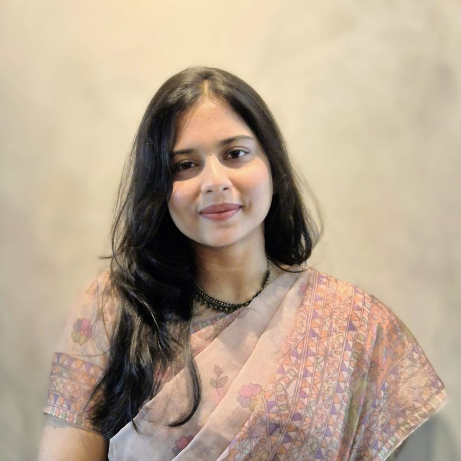

Working on
Senior software engineer and MSc Data Science researcher from Dhaka, Bangladesh, building vision systems that keep learning after deployment and work for the people current benchmarks overlook.

I am completing an MSc in Data Science at United International University, where my thesis studies deep convolutional networks and continual learning for food image recognition, extending Western-centric benchmarks to Bangladeshi cuisine.
Alongside my studies I work as a Senior Software Engineer at Guardian Life Insurance Limited, building the Laravel and Oracle-based systems behind policy administration and claims processing. Working with large, imperfect, real-world data every day shapes how I think about research.
I care about models that keep learning after deployment, that work for the regions and people current benchmarks overlook, and whose decisions can be explained — and I am applying to PhD programs in computer vision and multimodal learning for Fall 2027.
Adapting pretrained vision backbones and vision–language models to new categories and domains incrementally, without catastrophic forgetting, under realistic, long-tailed, culturally diverse shifts.
Using text — captions, recipes, attribute descriptions — to bootstrap recognition of visually rare categories where labeled images are scarce.
Understanding what models attend to — Grad-CAM and beyond — and turning that into explanations a non-expert can act on.
Vision, language and document understanding for Bengali and other under-represented languages and regions.
Public food-recognition benchmarks are Western-centric, and models trained on them perform poorly on South Asian dishes. I built a Bangladeshi-cuisine dataset and studied how a ResNet-50 recognizer can be extended to new cuisines incrementally. Naïve fine-tuning caused catastrophic forgetting of the original classes, so the thesis compares Elastic Weight Consolidation with replay-based fine-tuning, uses CLAHE to correct uneven illumination in home-cooked food photographs, applies MixUp and CutMix against class imbalance, and uses Grad-CAM to inspect what the network actually attends to.
Statistical and machine-learning study of tuberculosis prediction using regression models, covering data preparation, feature analysis and model evaluation.
Designed and evaluated a machine-learning framework for early prediction of colorectal cancer, comparing classifiers and feature-selection strategies.
Exploratory analysis and predictive modelling of fish market data — cleaning, feature engineering, visualisation and model comparison.
United International University
CGPA 3.25 / 4.00 (current) · expected 2026
Daffodil International University
CGPA 3.90 / 4.00
If you work on vision, continual learning or multimodal models and are open to a conversation, I'd love to hear from you.